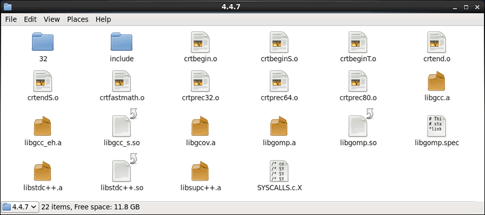
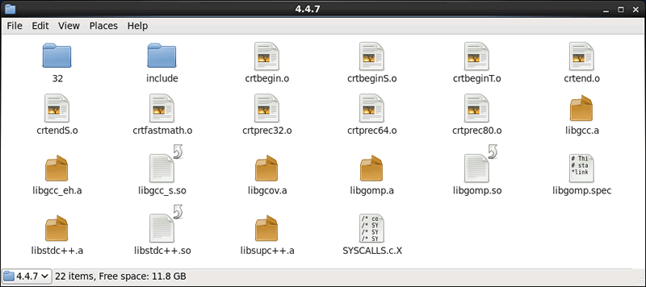

GCC使用静态链接库和动态链接库
我们知道，C、C++程序从源文件到生成可执行文件需经历 4 个阶段，分别为预处理、编译、汇编和链接，本节将重点围绕链接阶段，对静态链接库和动态链接库做详细的讲解。
有关链接操作的具体细节，感兴趣的读者可阅读《到底什么是链接，它起到了什么作用？》和《符号——链接的粘合剂》这两节。总的来说链接阶段要完成的工作，就是将同一项目中各源文件生成的目标文件以及程序中用到的库文件整合为一个可执行文件。
通过前面对 gcc（g++）指令的系统学习，我们已经学会了如何使用 gcc -c 指令将源文件生成对应的目标文件。那么，什么是库文件呢？
所谓库文件，读者可以将其等价为压缩包文件，该文件内部通常包含不止一个目标文件（也就是二进制文件）。值得一提的是，库文件中每个目标文件存储的代码，并非完整的程序，而是一个个实用的功能模块。例如，C 语言库文件提供有大量的函数（如 scanf()、printf()、strlen() 等），C++ 库文件不仅提供有使用的函数，还有大量事先设计好的类（如 string 字符串类）。
库文件的产生，极大的提高了程序员的开发效率，因为很多功能根本不需要从 0 开发，直接调取包含该功能的库文件即可。并且，库文件的调用方法也很简单，以 C 语言中的 printf() 输出函数为例，程序中只需引入 <stdio.h> 头文件，即可调用 printf() 函数。
有读者可能会问，调用库文件为什么还要牵扯到头文件呢？首先，头文件和库文件并不是一码事，它们最大的区别在于：头文件只存储变量、函数或者类等这些功能模块的声明部分，库文件才负责存储各模块具体的实现部分。读者可以这样理解：所有的库文件都提供有相应的头文件作为调用它的接口。也就是说，库文件是无法直接使用的，只能通过头文件间接调用。
事实上，库文件只是一个统称，代指的是一类压缩包，它们都包含有功能实用的目标文件。要知道，虽然库文件用于程序的链接阶段，但编译器提供有 2 种实现链接的方式，分别称为静态链接方式和动态链接方式，其中采用静态链接方式实现链接操作的库文件，称为静态链接库；采用动态链接方式实现链接操作的库文件，称为动态链接库。
那么，静态链接库和动态链接库到底有什么不同呢？
使用静态库文件实现程序的链接操作，既有优势也有劣势：
显然，这样生成的可执行文件是无法独立运行的。采用动态链接库生成的可执行文件运行时，GCC 编译器会将对应的动态链接库一同加载在内存中，由于可执行文件中事先记录了所需功能模块的位置信息，所以在现有动态链接库的支持下，也可以成功运行。
采用动态链接库实现程序的连接操作，其优势和劣势恰好和静态链接库相反：
在 Linux 发行版中，静态链接库和动态链接库通常存放在 /usr/bin 或者 /bin 目录下。图 1 所示是在 CentOS 系统中，系统库文件在 /usr/bin 目录下的存储状态。

图 1 链接库文件存储位置
实际开发中，除了可以利用图 1 所示的链接库文件外，我们还可以亲自动手，自定义一个静态链接库或者动态链接库。有关链接库文件的具体创建以及使用方法，我会在后续章节中做详细讲解。
有关链接操作的具体细节，感兴趣的读者可阅读《到底什么是链接，它起到了什么作用？》和《符号——链接的粘合剂》这两节。总的来说链接阶段要完成的工作，就是将同一项目中各源文件生成的目标文件以及程序中用到的库文件整合为一个可执行文件。
通过前面对 gcc（g++）指令的系统学习，我们已经学会了如何使用 gcc -c 指令将源文件生成对应的目标文件。那么，什么是库文件呢？
所谓库文件，读者可以将其等价为压缩包文件，该文件内部通常包含不止一个目标文件（也就是二进制文件）。值得一提的是，库文件中每个目标文件存储的代码，并非完整的程序，而是一个个实用的功能模块。例如，C 语言库文件提供有大量的函数（如 scanf()、printf()、strlen() 等），C++ 库文件不仅提供有使用的函数，还有大量事先设计好的类（如 string 字符串类）。
库文件的产生，极大的提高了程序员的开发效率，因为很多功能根本不需要从 0 开发，直接调取包含该功能的库文件即可。并且，库文件的调用方法也很简单，以 C 语言中的 printf() 输出函数为例，程序中只需引入 <stdio.h> 头文件，即可调用 printf() 函数。
有读者可能会问，调用库文件为什么还要牵扯到头文件呢？首先，头文件和库文件并不是一码事，它们最大的区别在于：头文件只存储变量、函数或者类等这些功能模块的声明部分，库文件才负责存储各模块具体的实现部分。读者可以这样理解：所有的库文件都提供有相应的头文件作为调用它的接口。也就是说，库文件是无法直接使用的，只能通过头文件间接调用。
头文件和库文件相结合的访问机制，最大的好处在于，有时候我们只想让别人使用自己实现的功能，并不想公开实现功能的源码，就可以将其制作为库文件，这样用户获取到的是二进制文件，而头文件又只包含声明部分，这样就实现了“将源码隐藏起来”的目的，且不会影响用户使用。关于如何制作库文件，后续章节会做详细讲解。
事实上，库文件只是一个统称，代指的是一类压缩包，它们都包含有功能实用的目标文件。要知道，虽然库文件用于程序的链接阶段，但编译器提供有 2 种实现链接的方式，分别称为静态链接方式和动态链接方式，其中采用静态链接方式实现链接操作的库文件，称为静态链接库；采用动态链接方式实现链接操作的库文件，称为动态链接库。
那么，静态链接库和动态链接库到底有什么不同呢？
静态链接库
静态链接库实现链接操作的方式很简单，即程序文件中哪里用到了库文件中的功能模块，GCC 编译器就会将该模板代码直接复制到程序文件的适当位置，最终生成可执行文件。使用静态库文件实现程序的链接操作，既有优势也有劣势：
- 优势是，生成的可执行文件不再需要任何静态库文件的支持就可以独立运行（可移植性强）；
- 劣势是，如果程序文件中多次调用库中的同一功能模块，则该模块代码势必就会被复制多次，生成的可执行文件中会包含多段完全相同的代码，造成代码的冗余。
另外值得一提的是，在 Linux 发行版系统中，静态链接库文件的后缀名通常用 .a 表示；在 Windows 系统中，静态链接库文件的后缀名为 .lib。和使用动态链接库生成的可执行文件相比，静态链接库生成的可执行文件的体积更大。
动态链接库
动态链接库，又称为共享链接库。和静态链接库不同，采用动态链接库实现链接操作时，程序文件中哪里需要库文件的功能模块，GCC 编译器不会直接将该功能模块的代码拷贝到文件中，而是将功能模块的位置信息记录到文件中，直接生成可执行文件。显然，这样生成的可执行文件是无法独立运行的。采用动态链接库生成的可执行文件运行时，GCC 编译器会将对应的动态链接库一同加载在内存中，由于可执行文件中事先记录了所需功能模块的位置信息，所以在现有动态链接库的支持下，也可以成功运行。
采用动态链接库实现程序的连接操作，其优势和劣势恰好和静态链接库相反：
- 优势是，由于可执行文件中记录的是功能模块的地址，真正的实现代码会在程序运行时被载入内存，这意味着，即便功能模块被调用多次，使用的都是同一份实现代码（这也是将动态链接库称为共享链接库的原因）。
- 劣势是，此方式生成的可执行文件无法独立运行，必须借助相应的库文件（可移植性差）。
在 Linux 发行版系统中，动态链接库的后缀名通常用 .so 表示；在 Windows 系统中，动态链接库的后缀名为 .dll。和使用静态链接库生成的可执行文件相比，动态链接库生成的可执行文件的体积更小，因为其内部不会被复制一堆冗余的代码。
总结
值得一提的是，GCC 编译器生成可执行文件时，默认情况下会优先使用动态链接库实现链接操作，除非当前系统环境中没有程序文件所需要的动态链接库，GCC 编译器才会选择相应的静态链接库。如果两种都没有（或者 GCC 编译器未找到），则链接失败。在 Linux 发行版中，静态链接库和动态链接库通常存放在 /usr/bin 或者 /bin 目录下。图 1 所示是在 CentOS 系统中，系统库文件在 /usr/bin 目录下的存储状态。

图 1 链接库文件存储位置
实际开发中，除了可以利用图 1 所示的链接库文件外，我们还可以亲自动手，自定义一个静态链接库或者动态链接库。有关链接库文件的具体创建以及使用方法，我会在后续章节中做详细讲解。
关注公众号「站长严长生」，在手机上阅读所有教程，随时随地都能学习。内含一款搜索神器，免费下载全网书籍和视频。

微信扫码关注公众号